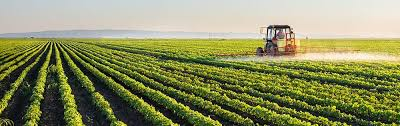

About Us
The GEJ Grassroots Volunteers for Development (GEJ-GVD) is a national organization that is keenly promoting good governance, virile/inclusive democracy and sustainable development in Nigeria and across the globe.  It came into being on the 7th December, 2013 and was formally commended and endorsed at Otuoke, Bayelsa State by Hon. Patrick Obah the Personal Assistant to the President on Special Projects for the mobilization of the masses in the country for the re-election of Dr. Goodluck Ebele Jonathan, GCFR as 2nd term President of the Federal Republic of Nigeria from 29th May, 2015.
It came into being on the 7th December, 2013 and was formally commended and endorsed at Otuoke, Bayelsa State by Hon. Patrick Obah the Personal Assistant to the President on Special Projects for the mobilization of the masses in the country for the re-election of Dr. Goodluck Ebele Jonathan, GCFR as 2nd term President of the Federal Republic of Nigeria from 29th May, 2015.
Our organization originated from Calabar, Cross River State, Nigeria through the vision of like-minded persons who believes that the right of franchise of the people must be represented and upheld among other Fundamental Human Rights (FHR) and holds the conviction that this body can enhance human dignity and development while encouraging people to assert their rights and vote for justice, fair-play and equity in their activities.